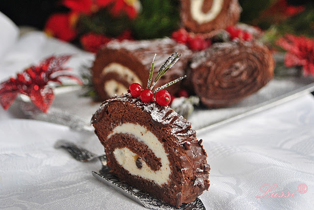

Коледно руло с боровинки
Продукти:
- 4 яйца
- 100 г брашно
- 100 г пудра захар
- 100 мл олио
- 1 чаена лъжичка бакпулвер
- 4 супени лъжици мармалад от боровинки
Начин на приготвяне:
Разбъркваме продуктите без мармалада и слагаме тестото да се пече в предварително загрята фурна на 200 градуса за 10-12 мин. Пече се на хартия. След като се извади се завива в кърпа. Маже се с мармалада, завива се на руло и се поръсва с пудра захар.